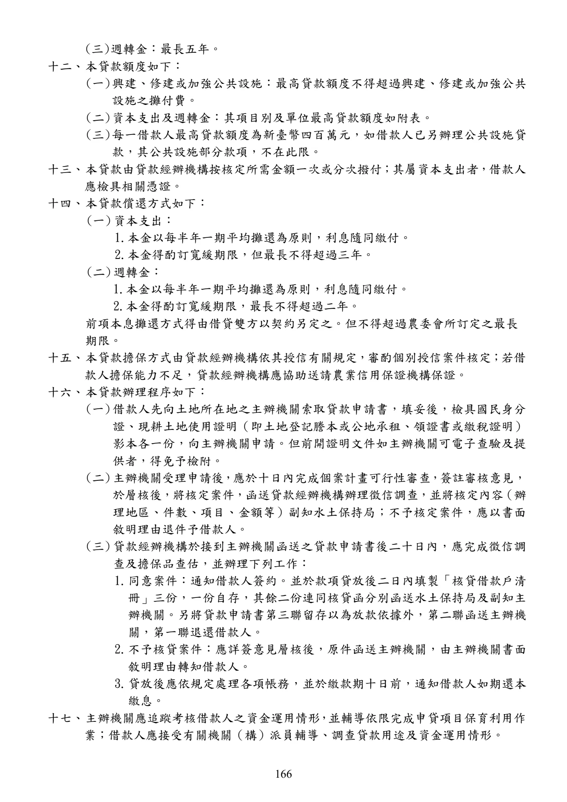

山坡地保育利用貸款
手冊頁：166 PDF頁：168／359
{kind=link}

展開查看PDF原始文字層
複雜表格欄列可能因文字層順序失真，請搭配原頁預覽查閱。
(三) 週轉金：最長五年。 十二、 本貸款額度如下： (一) 興建、修建或加強公共設施：最高貸款額度不得超過興建、修建或加強公共 設施之攤付費。 (二) 資本支出及週轉金：其項目別及單位最高貸款額度如附表。 (三) 每一借款人最高貸款額度為新臺幣四百萬元，如借款人已另辦理公共設施貸 款，其公共設施部分款項，不在此限。 十三、 本貸款由貸款經辦機構按核定所需金額一次或分次撥付；其屬資本支出者，借款人 應檢具相關憑證。 十四、 本貸款償還方式如下： (一) 資本支出： 1. 本金以每半年一期平均攤還為原則，利息隨同繳付。 2. 本金得酌訂寬緩期限，但最長不得超過三年。 (二) 週轉金： 1.本金以每半年一期平均攤還為原則，利息隨同繳付。 2.本金得酌訂寬緩期限，最長不得超過二年。 前項本息攤還方式得由借貸雙方以契約另定之。但不得超過農委會所訂定之最長 期限。 十五、 本貸款擔保方式由貸款經辦機構依其授信有關規定，審酌個別授信案件核定；若借 款人擔保能力不足，貸款經辦機構應協助送請農業信用保證機構保證。 十六、 本貸款辦理程序如下： (一) 借款人先向土地所在地之主辦機關索取貸款申請書，填妥後，檢具國民身分 證、現耕土地使用證明（即土地登記謄本或公地承租、領證書或繳稅證明） 影本各一份，向主辦機關申請。但前開證明文件如主辦機關可電子查驗及提 供者，得免予檢附。 (二) 主辦機關受理申請後 ， 應於十日內完成個案計畫可行性審查 ， 簽註審核意見， 於層核後，將核定案件，函送貸款經辦機構辦理徵信調查，並將核定內容 （辦 理地區、件數、項目、金額等）副知水土保持局；不予核定案件，應以書面 敘明理由退件予借款人。 (三) 貸款經辦機構於接到主辦機關函送之貸款申請書後二十日內，應完成徵信調 查及擔保品查估，並辦理下列工作： 1. 同意案件：通知借款人簽約。並於款項貸放後二日內填製「核貸借款戶清 冊」三份，一份自存，其餘二份連同核貸函分別函送水土保持局及副知主 辦機關。另將貸款申請書第三聯留存以為放款依據外，第二聯函送主辦機 關，第一聯退還借款人。 2. 不予核貸案件：應詳簽意見層核後，原件函送主辦機關，由主辦機關書面 敘明理由轉知借款人。 3. 貸放後應依規定處理各項帳務，並於繳款期十日前，通知借款人如期還本 繳息。 十七、 主辦機關應追蹤考核借款人之資金運用情形 ， 並輔導依限完成申貸項目保育利用作 業；借款人應接受有關機關（構）派員輔導、調查貸款用途及資金運用情形。